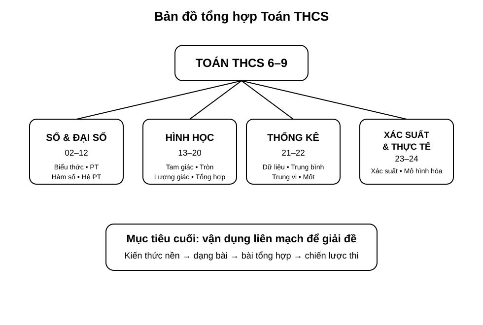
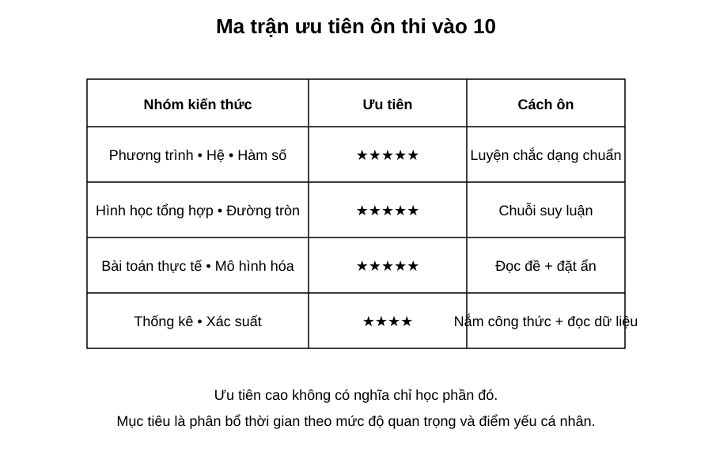
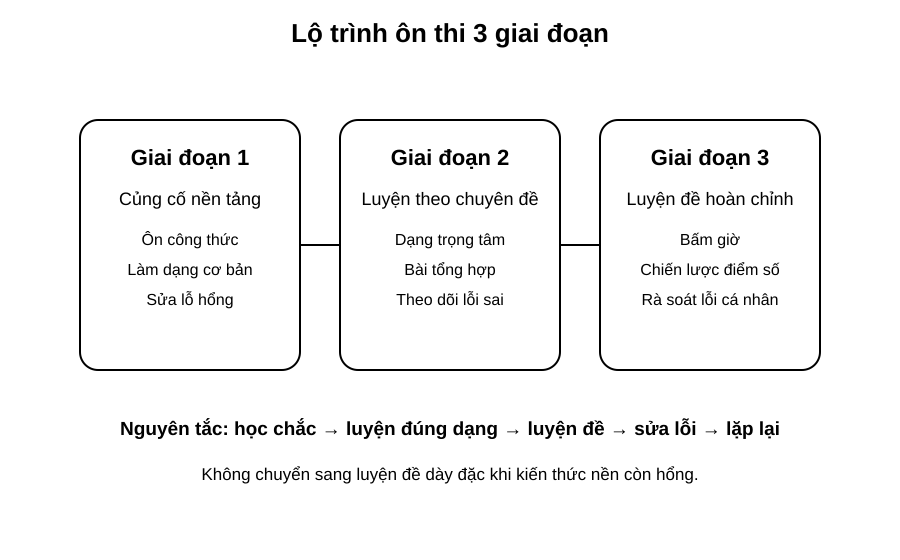

Chuyên đề 25 – Bản đồ tổng hợp & chiến lược ôn thi vào 10
Trạng thái: Đã kiểm định nội dung học thuật và chiến lược ôn tập; cấu trúc Roadmap chuẩn 11 mục.
Lớp trọng tâm: 9 Mạch kiến thức: Tổng hợp/Thi vào 10 Mức ưu tiên: ⭐⭐⭐⭐⭐
🧭 1. Bản đồ kiến thức
TỔNG HỢP ÔN THI VÀO 10
│
├── Số & Đại số
│ ├── số và phép tính
│ ├── biểu thức – hằng đẳng thức
│ ├── phương trình – bất phương trình
│ ├── hệ phương trình
│ └── hàm số – đồ thị
│
├── Hình học
│ ├── góc – tam giác – tứ giác
│ ├── Thales – đồng dạng
│ ├── hệ thức lượng
│ ├── đường tròn
│ └── hình học tổng hợp
│
├── Thống kê & xác suất
│ ├── bảng – biểu đồ – dữ liệu ghép nhóm
│ ├── đại lượng đặc trưng
│ └── xác suất thực nghiệm & xác suất theo mô hình
│
└── Bài toán thực tế
└── mô hình hóa – kiểm tra – kết luận
Mạch tư duy trọng tâm:
hệ thống hóa kiến thức → xác định ưu tiên → luyện theo chuyên đề → luyện đề có bấm giờ → phân tích lỗi → quay lại đúng chuyên đề yếu.
Lưu ý: Cấu trúc đề, thang điểm và mức độ ưu tiên có thể khác theo tỉnh/thành và từng năm. Khi ôn giai đoạn cuối, luôn lấy đề minh họa hoặc đề chính thức mới nhất của địa phương dự thi làm căn cứ ưu tiên cuối cùng.
Minh họa trực quan
1. Bản đồ tổng hợp Toán THCS

Đây là bức tranh tổng thể của toàn bộ lộ trình Toán THCS từ lớp 6 đến lớp 9.
Bốn mạch lớn cần nắm:
- Số và Đại số: biểu thức, hằng đẳng thức, phương trình, hệ phương trình, hàm số;
- Hình học: góc, tam giác, tứ giác, đường tròn, hệ thức lượng, bài hình tổng hợp;
- Thống kê: bảng tần số/tần số tương đối, biểu đồ, dữ liệu ghép nhóm, số trung bình, trung vị, mốt;
- Xác suất và bài toán thực tế: xác suất thực nghiệm, không gian mẫu, biến cố, xác suất theo mô hình và mô hình hóa.
Mục tiêu cuối cùng không phải chỉ “học hết từng chuyên đề”, mà là:
kết nối kiến thức giữa các mạch để giải bài tổng hợp và bài thi hoàn chỉnh.
2. Ma trận ưu tiên ôn thi vào 10

Ma trận này giúp phân bổ thời gian hợp lý.
Nhóm cần ưu tiên rất cao:
- phương trình, hệ phương trình, hàm số;
- hình học tổng hợp, đường tròn;
- bài toán thực tế và mô hình hóa.
Nhóm cũng rất quan trọng:
- thống kê;
- xác suất.
Lưu ý:
Ưu tiên cao không có nghĩa là bỏ qua phần còn lại. Ý nghĩa của ma trận là giúp phân bổ nhiều thời gian hơn cho những phần được đặt trọng số cao trong cấu trúc đề địa phương hoặc những phần học sinh còn yếu.
3. Lộ trình ôn thi 3 giai đoạn

Ba giai đoạn nên đi theo thứ tự:
Giai đoạn 1 – Củng cố nền tảng
- ôn lại công thức và khái niệm;
- làm các dạng cơ bản;
- phát hiện lỗ hổng kiến thức.
Giai đoạn 2 – Luyện theo chuyên đề
- luyện bài trọng tâm của từng mạch;
- làm bài tổng hợp mức vừa;
- ghi lại lỗi sai thường gặp.
Giai đoạn 3 – Luyện đề hoàn chỉnh
- làm đề đủ thời gian;
- rèn chiến lược phân bổ thời gian;
- phân tích lỗi sau mỗi đề.
Nguyên tắc xuyên suốt:
học chắc → luyện đúng dạng → luyện đề → sửa lỗi → lặp lại
Chiến lược ôn thi vào 10
Một kế hoạch ôn tập hiệu quả thường có 4 trục:
| Trục ôn tập | Mục tiêu |
|---|---|
| Kiến thức nền | Nhớ đúng công thức, định lý, quy tắc |
| Dạng bài | Nhận diện nhanh bài thuộc chuyên đề nào |
| Kỹ năng trình bày | Làm bài rõ ràng, đủ bước, hạn chế mất điểm |
| Chiến lược phòng thi | Phân bổ thời gian, chọn câu làm trước |
Phân bổ thời gian ôn tập gợi ý
Nếu đang ở giai đoạn ôn tập tổng lực, có thể dùng một ví dụ phân bổ tham khảo như sau:
| Mảng nội dung | Tỉ lệ thời gian minh họa |
|---|---|
| Đại số trọng tâm | 30% |
| Hình học trọng tâm | 30% |
| Bài toán thực tế / mô hình hóa | 20% |
| Thống kê và xác suất | 10% |
| Rà soát lỗi, chữa đề | 10% |
Đây không phải tỉ lệ chuẩn dùng cho mọi học sinh. Cần điều chỉnh theo điểm mạnh – yếu cá nhân, thời gian còn lại và cấu trúc đề của địa phương dự thi.
Quy trình luyện một đề thi
Làm đề trong thời gian thật
↓
Chấm và đánh dấu lỗi
↓
Phân loại lỗi:
- sai kiến thức
- sai kỹ năng
- sai do cẩu thả
↓
Ôn lại chuyên đề liên quan
↓
Làm lại câu sai
↓
Ghi vào sổ lỗi cá nhân
Cách dùng “sổ lỗi sai”
Sau mỗi buổi học hoặc mỗi đề thi, nên ghi lại:
- câu sai thuộc chuyên đề nào;
- sai vì không nhớ kiến thức hay vì trình bày;
- cách sửa đúng;
- dấu hiệu nhận biết để lần sau tránh lặp lại.
Ví dụ bảng ghi nhanh:
| Câu sai | Chuyên đề | Nguyên nhân | Cách sửa |
|---|---|---|---|
| Câu 3 | Hệ phương trình | Thế sai dấu | Viết rõ từng bước biến đổi |
| Câu 5 | Đường tròn | Quên tính chất tiếp tuyến | Ôn lại bán kính vuông góc tiếp tuyến |
Chiến lược làm bài trong phòng thi
- Đọc nhanh toàn bộ đề để ước lượng độ khó.
- Làm trước các câu chắc chắn lấy điểm.
- Không dừng quá lâu ở một câu khó.
- Với hình học, luôn vẽ hình cẩn thận và ghi giả thiết.
- Chừa vài phút cuối để rà soát dấu, đơn vị, điều kiện.
Checklist trước kỳ thi
- [ ] Ôn lại toàn bộ công thức trọng tâm.
- [ ] Làm lại các dạng bài thường sai.
- [ ] Có ít nhất một sổ lỗi sai cá nhân.
- [ ] Luyện vài đề hoàn chỉnh có bấm giờ.
- [ ] Chuẩn bị máy tính, dụng cụ học tập đầy đủ.
- [ ] Ngủ đủ và giữ tâm lý ổn định trước ngày thi.
Điều quan trọng nhất ở chuyên đề cuối
Chuyên đề 25 không bổ sung quá nhiều kiến thức mới. Vai trò chính là hệ thống hóa, ưu tiên hóa, và biến kiến thức đã học thành chiến lược hành động rõ ràng.
Nếu học sinh thực hiện tốt chuyên đề này, việc ôn thi sẽ:
- bớt rối;
- có thứ tự rõ ràng;
- tập trung đúng chỗ;
- tăng hiệu quả luyện đề.
🎯 2. Mục tiêu cần đạt
Sau khi hoàn thành chuyên đề, học sinh cần:
- [ ] Nhìn được toàn bộ 25 chuyên đề như một hệ thống liên kết.
- [ ] Xác định được nhóm kiến thức mạnh, yếu và mức ưu tiên ôn tập.
- [ ] Lập được kế hoạch ôn theo ba giai đoạn.
- [ ] Nhận diện nhanh dạng bài và chuyên đề liên quan khi đọc đề.
- [ ] Biết phân bổ thời gian làm bài theo cấu trúc đề thực tế.
- [ ] Có quy trình chữa đề và sổ lỗi sai cá nhân.
- [ ] Biết điều chỉnh chiến lược theo đề chính thức của địa phương dự thi.
📖 3. Kiến thức cốt lõi
3.1. Bốn mạch kiến thức lớn
Số và Đại số
Tập trung vào: - số và phép tính; - biểu thức; - hằng đẳng thức và phân tích nhân tử; - phương trình, bất phương trình; - hệ phương trình; - hàm số và đồ thị.
Hình học
Tập trung vào: - góc và quan hệ đường thẳng; - tam giác và các đường đặc biệt; - tứ giác; - Thales và đồng dạng; - hệ thức lượng; - đường tròn; - hình học tổng hợp.
Thống kê – xác suất
Tập trung vào: - bảng tần số, tần số tương đối, biểu đồ và dữ liệu ghép nhóm; - trung bình, trung vị, mốt và khoảng biến thiên; - xác suất thực nghiệm, xác suất theo mô hình đồng khả năng và bài nhiều bước.
Bài toán thực tế
Tập trung vào: - đọc đề dài; - đặt ẩn; - lập mô hình; - kiểm tra nghiệm; - trả lời theo ngữ cảnh.
3.2. Ba giai đoạn ôn tập
Ba giai đoạn ôn tập là một tiến trình, mỗi giai đoạn có mục tiêu riêng:
| Giai đoạn | Mục tiêu ưu tiên |
|---|---|
| 1 · Củng cố nền | Lấp lỗ hổng; nhớ lại công thức; làm chắc bài cơ bản. |
| 2 · Luyện chuyên đề | Nhận diện dạng; tăng tốc; xử lý bài vận dụng vừa; hình thành sổ lỗi. |
| 3 · Luyện đề | Làm đề trong thời gian thật; quản lý thời gian; phát hiện lỗi hệ thống; điều chỉnh chiến lược. |
Tiến trình: nền tảng → luyện kỹ năng theo chuyên đề → luyện đề và sửa lỗi.
3.3. Ma trận ưu tiên cá nhân
Không nên ôn mọi chuyên đề với thời lượng giống nhau.
Có thể phân loại:
| Nhóm | Ý nghĩa | Hành động |
|---|---|---|
| A | Ưu tiên cao theo đề địa phương + đang yếu | Ưu tiên cao nhất |
| B | Ưu tiên cao theo đề địa phương + đang khá | Luyện duy trì |
| C | Ưu tiên thấp hơn theo đề địa phương + đang yếu | Bổ sung có chọn lọc |
| D | Ưu tiên thấp hơn theo đề địa phương + đang chắc | Ôn rà soát |
Ma trận trên chỉ là khung. Cần điều chỉnh theo cấu trúc đề chính thức của địa phương.
Khi xếp chuyên đề vào A–B–C–D, nên dựa trên bằng chứng học tập như kết quả 3–5 bài gần nhất, tỉ lệ câu đúng theo kỹ năng, thời gian làm và lỗi lặp lại; không nên chỉ dựa vào cảm giác “mình mạnh/yếu”.
3.4. Quy trình luyện một đề
- Làm đề đúng thời gian quy định.
- Chấm theo đáp án, hướng dẫn chấm hoặc thang điểm đáng tin cậy nếu có.
- Phân loại lỗi.
- Tìm chuyên đề gốc gây ra lỗi.
- Ôn lại kiến thức liên quan.
- Làm lại câu sai không nhìn lời giải.
- Ghi vào sổ lỗi.
- Sau vài ngày, làm lại một câu tương tự.
3.5. Phân loại lỗi
Ba nhóm quan trọng:
Sai kiến thức - quên công thức; - dùng sai định lý; - không nhận ra dạng bài.
Sai kỹ năng - biến đổi chậm; - trình bày thiếu bước; - chọn phương pháp dài.
Sai cẩu thả - sai dấu; - sai số; - quên điều kiện; - quên đơn vị.
Mỗi loại lỗi cần một cách sửa khác nhau.
Sổ lỗi cá nhân nên ghi đủ bốn trường: (1) câu/dạng bài đang sai, (2) chuyên đề gốc cần ôn, (3) nguyên nhân sai, (4) dấu hiệu nhận biết và cách sửa. Sau khi chữa, tự làm lại không nhìn lời giải và thử một câu tương tự sau vài ngày; nếu còn sai, quay về đúng kiến thức gốc.
3.5A. Từ bước giải sai đến đúng chuyên đề cần học lại
Khi chữa một đề tổng hợp, hãy ghi rõ bước đầu tiên mình chưa hiểu hoặc làm sai, thay vì ghi chung chung “sai đại số” hay “sai hình”. Bảng dưới đây chỉ là tình huống minh họa để tra cứu, không phải thống kê về tần suất câu hỏi trong đề thi của bất cứ địa phương nào.
| Bước giải đang sai | Tra cứu kiến thức trực tiếp | Nếu còn thiếu nền, mở thêm |
|---|---|---|
| Rút gọn phân thức làm mất điều kiện xác định | CĐ07 – Phân thức | CĐ05 – Hằng đẳng thức, CĐ06 – Phân tích nhân tử |
| Giải phương trình hoặc bất phương trình sai dấu | CĐ08 – Phương trình, bất phương trình | CĐ04 – Biểu thức đại số |
| Giải hệ sai khi thế hoặc cộng đại số | CĐ09 – Hệ phương trình | CĐ08 – Phương trình |
| Dùng Viète nhưng quên điều kiện của biểu thức có nghiệm ở mẫu | CĐ12 – Phương trình bậc hai, Viète | CĐ07 – Phân thức |
| Chứng minh hình học nhưng không tìm được hai tam giác đồng dạng | CĐ17 – Thales, đồng dạng | CĐ13 – Góc, CĐ14 – Tam giác |
| Dùng góc nội tiếp hoặc tiếp tuyến chưa có căn cứ | CĐ19 – Đường tròn | CĐ20 – Hình học tổng hợp để học chuỗi chứng minh |
| Bài toán thực tế có nghiệm đại số nhưng nghiệm không phù hợp bối cảnh | CĐ24 – Mô hình hóa | CĐ08 – Phương trình hoặc CĐ09 – Hệ phương trình |
Ví dụ ghi sổ lỗi sai có thể tự làm theo
- Bước sai: Vẽ đồ thị \(y=2x\) bằng hai giao điểm với trục tọa độ. Cả hai đều là \(O(0;0)\), nên học sinh kết luận “không thể vẽ”.
- Chuyên đề cần mở: CĐ10 – Hàm số và đồ thị, phần trường hợp đặc biệt \(y=ax\) và cách chọn hai điểm phân biệt.
- Nguyên nhân: Đã dùng máy móc hai giao điểm với trục khi \(b=0\), không kiểm tra hai điểm có khác nhau hay không.
- Cách sửa: Giữ \(O(0;0)\), chọn thêm \(A(1;2)\); đường thẳng qua \(O,A\) chính là đồ thị \(y=2x\).
- Tự kiểm tra sau vài ngày: Không nhìn lời giải, tự vẽ \(y=-3x\) bằng hai điểm khác nhau. Nếu vẫn vướng, quay lại đúng mục kiến thức trên.
Nguyên tắc: Một câu tổng hợp có thể sử dụng nhiều chuyên đề. Ưu tiên quay lại kiến thức liên quan đến bước sai đầu tiên, hiểu lý do và xem ví dụ mẫu, rồi làm lại câu; không gán tất cả lỗi cho một chuyên đề chỉ vì câu hỏi có tên dạng bài đó.
3.6. Chiến lược làm bài
Nguyên tắc chung: - đọc toàn đề trước; - làm câu chắc điểm trước; - không mắc kẹt quá lâu; - chừa thời gian kiểm tra; - với hình học, ghi rõ giả thiết và kết luận; - với bài thực tế, kiểm tra đơn vị và điều kiện.
3.7. Phân bổ thời gian
Tỉ lệ 30% – 30% – 20% – 10% – 10% trong phần minh họa là gợi ý tham khảo, không phải công thức cố định.
Cần điều chỉnh theo: - điểm mạnh/yếu cá nhân; - thời gian còn lại; - cấu trúc đề địa phương; - kết quả các đề luyện gần nhất.
3.8. Chỉ số theo dõi tiến bộ
Sau mỗi tuần có thể theo dõi:
| Chỉ số | Cách đo |
|---|---|
| Điểm trung bình đề | Trung bình 3–5 đề gần nhất |
| Tỉ lệ câu cơ bản đúng | % câu nền tảng làm đúng |
| Số lỗi cẩu thả | Đếm mỗi đề |
| Số chuyên đề yếu | Danh sách A |
| Thời gian hoàn thành | So với thời gian quy định |
Mục tiêu không chỉ là tăng điểm mà còn là giảm lỗi lặp lại.
🔗 4. Kiến thức liên quan
- Kiến thức nên ôn trước: toàn bộ hệ thống từ 01 – Bản đồ chương trình đến 24 – Bài toán thực tế
- Vai trò: tổng hợp, kết nối và chuyển toàn bộ kiến thức thành chiến lược ôn thi.
- Chuyên đề sử dụng tiếp: không có; đây là chuyên đề kết thúc Roadmap.
🧩 5. Các dạng bài cần nắm vững
Dạng 1. Rà soát kiến thức nền
Tự kiểm tra công thức, định lý và quy tắc trọng tâm của từng mạch.
Dạng 2. Nhận diện chuyên đề từ một câu hỏi
Đọc đề và xác định: - chuyên đề chính; - chuyên đề phụ; - công cụ cần dùng.
Dạng 3. Bài tổng hợp Đại số
Kết hợp biểu thức, phương trình, hệ, hàm số hoặc bài toán thực tế.
Dạng 4. Bài tổng hợp Hình học
Kết hợp nội tiếp, đồng dạng, tiếp tuyến, hệ thức lượng và chứng minh hệ thức.
Dạng 5. Thống kê – xác suất
Đọc bảng/biểu đồ và dữ liệu ghép nhóm; tính đại lượng đặc trưng; phân biệt xác suất thực nghiệm với xác suất theo mô hình và giải các bài xác suất phù hợp.
Dạng 6. Bài toán thực tế
Đặt ẩn, lập mô hình, kiểm tra nghiệm và kết luận.
Dạng 7. Luyện đề hoàn chỉnh
Mục tiêu: - tốc độ; - độ chính xác; - phân bổ thời gian; - chiến lược bỏ qua/tạm hoãn câu khó.
Dạng 8. Chữa đề và tái luyện
Không dừng ở việc xem đáp án. Phải: - tự làm lại; - ghi nguyên nhân sai; - tìm bài tương tự; - kiểm tra lại sau vài ngày.
🚀 6. Dạng bài thi vào lớp 10
Toàn bộ chuyên đề này hướng trực tiếp tới thi vào lớp 10.
Các nhóm cần rà soát đầy đủ:
| Dạng bài | Trọng tâm cần chắc | Mức ưu tiên | Mở bài |
|---|---|---|---|
| Dạng 1 | Đại số nền và phương trình/hệ. | Theo chuyên đề | Luyện Ôn phương trình và bất phương trình → Luyện Ôn hệ phương trình → |
| Dạng 2 | Hàm số – đồ thị. | Theo chuyên đề | Luyện ngay → |
| Dạng 3 | Bài toán thực tế. | Theo chuyên đề | Luyện ngay → Tự luận · WX24-MOD-001 → |
| Dạng 4 | Hình học tổng hợp và đường tròn. | Theo chuyên đề | Luyện ngay → |
| Dạng 5 | Thống kê và xác suất. | Theo chuyên đề | Luyện Ôn thống kê → Luyện Ôn xác suất → |
Thứ tự ưu tiên giữa các nhóm trên không nên mặc định giống nhau cho mọi địa phương.
Tuy nhiên:
Không nên coi một ma trận ưu tiên chung là cố định cho mọi địa phương. Cấu trúc đề có thể khác theo tỉnh/thành và năm học.
Trước kỳ thi, cần đối chiếu: - đề minh họa mới nhất; - đề chính thức các năm gần đây; - hướng dẫn hoặc cấu trúc do cơ quan giáo dục địa phương công bố.
Mức ưu tiên tổng thể của chuyên đề: ⭐⭐⭐⭐⭐.
⚠️ 7. Lỗi sai thường gặp
| Lỗi sai | Cách tránh |
|---|---|
| Ôn dàn trải, không có ưu tiên | Dùng ma trận A–B–C–D |
| Chỉ làm đề mà không chữa | Bắt buộc phân loại lỗi sau mỗi đề |
| Xem lời giải rồi tưởng đã hiểu | Tự làm lại không nhìn lời giải |
| Dồn quá nhiều thời gian vào câu khó | Có giới hạn thời gian cho từng câu |
| Học thuộc nhưng không nhận dạng được dạng | Luyện bước “đọc đề → gọi tên chuyên đề” |
| Lặp lại lỗi cẩu thả | Ghi lỗi vào sổ và kiểm tra trước khi nộp |
| Dùng một chiến lược cho mọi tỉnh/thành | Điều chỉnh theo cấu trúc đề địa phương |
| Không theo dõi tiến bộ | Ghi điểm, thời gian và lỗi sau từng đề |
Learning Journey · 5 thẻ học theo hai mạch ở trang riêng
Bộ năm thẻ ở trang Ôn thi theo chặng gồm ba thẻ học thuật và hai thẻ kỹ năng thi. Nội dung học thuật được ôn trước, phần kỹ năng thi dùng sau khi đã làm bài và chữa lỗi.
📝 8. Luyện tập
Chuyên đề 25 từ nay tách rõ ba đường luyện khác nhau để không trộn “biết Toán” với “biết làm bài thi”:
A. Luyện học thuật
Bộ bài tập học thuật tổng hợp gồm các bài Đại số, hàm số – Viète, bài toán thực tế, Thống kê – Xác suất và Hình học. Đây là nơi kiểm tra trực tiếp năng lực Toán.
B. Bài toán kinh điển – học bài mẫu
Bộ 10 bài toán kinh điển kết nối biểu thức căn và câu hỏi phụ, Viète có tham số, hệ phương trình thực tế, năng suất, đồng dạng, tiếp tuyến–cát tuyến, trực tâm và cực trị.
Mở thư viện bài mỏ neo: luôn giữ 10 bài tiêu biểu để định hướng, đồng thời tiếp nhận thêm các bài mới có ID, dạng tư duy và liên kết kiến thức riêng. Hiện đã có bài thứ 11 và các bản giải sâu có hình học chính xác.
Mỗi bài yêu cầu học sinh nhận ra dấu hiệu → công cụ → chuỗi suy luận → cách biến đổi bài, rồi tự giải lại biến thể trước khi chuyển sang đề tổng hợp.
C. Đề luyện hoàn chỉnh – làm bài đủ thời gian
Mở thư viện đề luyện →: chọn đề theo mục tiêu học và mở đáp án sau khi làm trên giấy. Ba đề hiện có là đề tự biên soạn, không phải đề thi chính thức.
Ba đề dưới đây là bộ luyện tự biên soạn, 120 phút, 10 điểm, gồm 5 bài tự luận; các đề được phân tầng từ củng cố nền đến liên kết kiến thức và chứng minh. Đây là tài liệu luyện tập theo những mạch kiến thức của chúng ta, không phải đề chính thức hay đề dự báo. Đáp án nằm ở trang riêng, để học sinh hoàn thành bài trên giấy trước khi mở:
Cách sử dụng bộ đề: làm trên giấy, có thể tự bấm giờ 120 phút. Mỗi đề có trang lời giải chi tiết và rubric theo bước riêng để đối chiếu sau khi hoàn thành. Website không yêu cầu nhập/nộp bài, không lưu điểm tự luận và không tự chấm. Đây là bộ đề tự biên soạn, không phải đề chính thức hoặc đề dự báo.
Trình tự khuyến nghị: làm đề trên giấy → đối chiếu lời giải và rubric → tự nhận diện bước còn sai → mở bài mỏ neo → làm bài biến thể. Không dùng điểm của lớp kỹ năng thi để cộng vào điểm Toán.
D. Kỹ năng thi — tách khỏi điểm học thuật
Tự đánh giá kỹ năng làm bài gồm quản lý thời gian, phân loại lỗi, sổ lỗi và quy trình chữa đề.
Kỹ năng thi giúp bảo toàn điểm số; nó không thay thế kiến thức Toán và không được trộn vào điểm tự kiểm tra học thuật.
✅ 9. Tự kiểm tra
Tự kiểm tra Chuyên đề 25 là bài Toán học thuật tự làm trên giấy và tự đối chiếu: Đại số, Viète, Thống kê – Xác suất, Hình học và vận dụng.
Phần hỏi về chiến lược phòng thi đã được chuyển sang Tự đánh giá kỹ năng làm bài.
Nguyên tắc: điểm tự kiểm tra phản ánh khả năng giải Toán; kỹ năng thi được theo dõi riêng bằng checklist và sổ lỗi.
🔄 10. Liên kết Roadmap
- ← Hệ thống kiến thức: 01 – Bản đồ chương trình → 24 – Bài toán thực tế
- → Tiếp theo: quay lại các chuyên đề được xếp nhóm ưu tiên A/B theo kết quả luyện đề.
-
🏁 Kết thúc Roadmap: dùng chuyên đề này như bảng điều khiển ôn tập.
-
✏️ Luyện tập: Bài tập Chuyên đề 25 · 10 bài toán kinh điển · Đề 1 · Đề 2 · Đề 3
- ✅ Tự kiểm tra: Tự kiểm tra Chuyên đề 25
Xem toàn bộ hệ thống tại Blueprint 25 chuyên đề.
🏁 11. Điều kiện hoàn thành
Chuyên đề được xem là hoàn thành khi học sinh:
- [ ] Có bản đồ tổng hợp các mạch kiến thức.
- [ ] Có ma trận ưu tiên cá nhân.
- [ ] Có kế hoạch ôn theo ba giai đoạn.
- [ ] Có sổ lỗi sai và quy trình chữa đề.
- [ ] Biết phân loại lỗi kiến thức – kỹ năng – cẩu thả.
- [ ] Biết điều chỉnh chiến lược theo cấu trúc đề địa phương.
- [ ] Tự làm bài kiểm tra học thuật trên giấy, tự đối chiếu từng bước và chữa xong các câu sai; điểm tự chấm được ghi riêng, không dùng để khóa tiến độ học.
- [ ] Hoàn thành ít nhất hai đề có bấm giờ và phân tích lại đầy đủ (không yêu cầu làm cả ba ngay từ đầu).